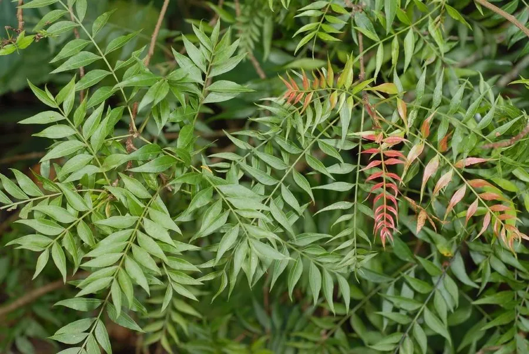

乔木 · 植物界
黄连木 Pistacia chinensis

漆树科黄连木属落叶乔木，秋叶转为鲜红或橙黄，嫩叶可代茶，种子可榨油，是优良的秋色叶与木本油料树种。
- 分类
- 门被子植物门纲木兰纲目无患子目科漆树科属黄连木属
- 栖息环境
- 海拔 1500 米以下的山地阳坡与沟谷，喜光耐旱、耐瘠薄
- 地理分布
- 中国华北、华东、华中、华南及西南各地；菲律宾
- 保护级别
- 暂无评估；未被列入国家重点保护野生植物名录
物种志
黄连木为漆树科黄连木属落叶乔木，高可达二十五米，树皮灰褐色、呈鳞片状剥落，树冠开阔。偶数羽状复叶，小叶五至七对，披针形，全缘，嫩叶紫红色，秋季转为鲜红或橙黄色。花单性，雌雄异株，先叶开放，花紫红色，花期三至四月；核果倒卵形，成熟时由红变蓝紫色，果期九至十一月。
黄连木分布于中国华北、华东、华中、华南及西南各地，菲律宾也有，多生于海拔一千五百米以下的山地阳坡和沟谷。它喜光、耐干旱瘠薄，适宜深厚肥沃、排水良好的土壤，抗风力强。秋季叶色红艳，是重要的秋色叶树种；嫩叶可代茶饮用，故有黄连茶之称；种子含油率高，可榨油供工业用；木材坚韧，可制家具和农具。黄连木也是优良的生物柴油原料树种。
形态与习性
- 株高可达 25 m，树冠开阔
- 花期3–4 月，花紫红色、先叶开放
- 果期9–11 月，核果蓝紫色
- 光照喜光，不耐荫蔽
- 水分耐干旱，忌积水
- 土壤深厚肥沃、排水良好
- 主要用途秋色叶树，种子榨油
趣味知识
- 黄连木嫩叶经焯水后可代茶饮用，味道微苦，因此得名黄连茶。
- 它的种子含油率可达百分之四十，是生产生物柴油的优良原料。
- 秋季黄连木叶片转为鲜红或橙黄，在北方山区形成壮观的秋色景观。